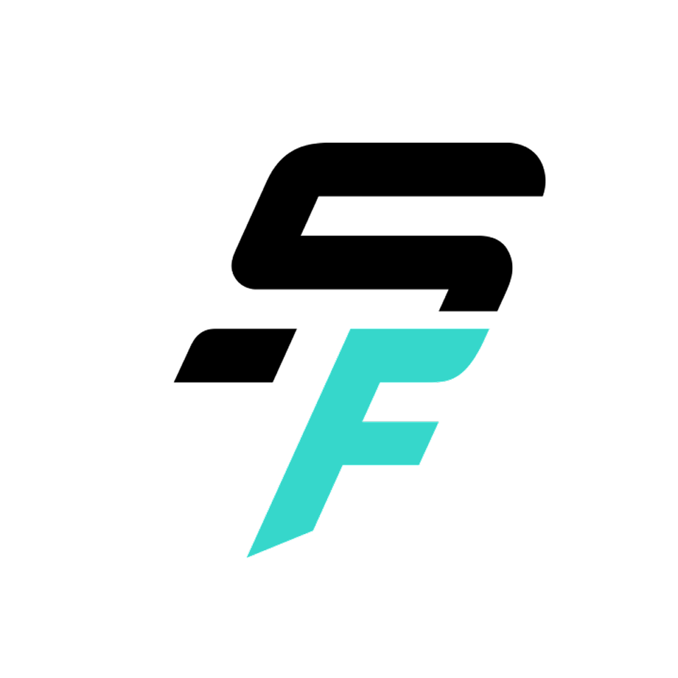

WHAT IS SSENTIF
센티프는 시설이 아니라
‘회원’을 관리하는 프로그램입니다
출입, 락커, 일정만 관리하는 프로그램이 아닙니다. 회원 만족도, 수업 기록, 강사별 성과가 차곡차곡 쌓이는 회원 중심 운영 데이터. 그래서 실질적인 성과를 만듭니다.

사람이 바뀌어도 센터는 흔들리지 않아야 합니다.
센티프는 그 기준을 대표님과 함께 세워드립니다.
규모가 커질수록 깊어만 가는 대표님의 네 가지 고민입니다.
강사가 이직하면 회원 30명이 따라 나갑니다.

관리에 만족 못한 회원이 조용히 떠나갑니다.
출석률과 만료 기간을 계산해 이탈을 미리 방지합니다.
일정 조율, 세션 차감, 사인지가 안 맞습니다.
투명한 예약–출석–일지작성 흐름이라 다시 볼 필요 없이 정확합니다.
월말마다 어김없이 페이롤 업무로 엑셀과 세션지에 얽매입니다.
차감 횟수와 정산 요율을 자동 계산해 급여명세서까지 발급합니다.
이 중 하나라도 매달 반복되고 있다면,
센티프는 정확히 그 문제를 해결하기 위해 만들어졌습니다.
출입, 락커, 일정만 관리하는 프로그램이 아닙니다. 회원 만족도, 수업 기록, 강사별 성과가 차곡차곡 쌓이는 회원 중심 운영 데이터. 그래서 실질적인 성과를 만듭니다.
강사는 수업일지만 작성하면 됩니다. 회원의 변화를 그래프로 보여주고 운동 볼륨을 자동으로 계산하는 일은 센티프가 합니다. 담당이 바뀌어도 기록은 그대로 이어집니다.

회원과 강사의 수업·예약·노쇼·상담·회의까지, 흩어져 있던 일정이 하나의 캘린더에 모입니다. 누가 언제 무엇을 하고 있는지 물어보지 않아도 보입니다.

강사가 운동 라이브러리에서 종목을 골라 조합하기만 하면, 그것이 그대로 수업 기록이 되고 회원의 숙제가 됩니다. 센터만의 운동도 직접 등록해 쓸 수 있습니다.

회원의 만족도와 이탈 신호, 반응처럼 보이지 않아 감으로 판단하던 영역을 데이터로 알려드립니다. 신규 등록과 재등록 중 지금 무엇에 손을 써야 하는지 알 수 있습니다.

출석이 완료되면 회차가 차감되고, 수업 수 × 정산기준에 따라 강사별 급여 명세서가 발급됩니다. 월말에 엑셀에 시달릴 필요가 없습니다.

센티프에 쌓인 센터 데이터를 바탕으로 상담 준비부터 루틴 설계, 마케팅 콘텐츠까지 지원합니다. 물어보면 우리 센터의 맥락으로 답합니다.

워크스페이스 단위로 지점을 나누고 역할에 따라 권한을 부여합니다. 지점이 늘어도 계정은 하나면 충분하고, 지점을 오갈 때 다시 로그인할 필요가 없습니다.

진짜 운영에 필요한 현장의 데이터를 센티프가 관리해드립니다. 도입 상담부터 온보딩, 자리 잡을 때까지 센티프 팀이 함께합니다.